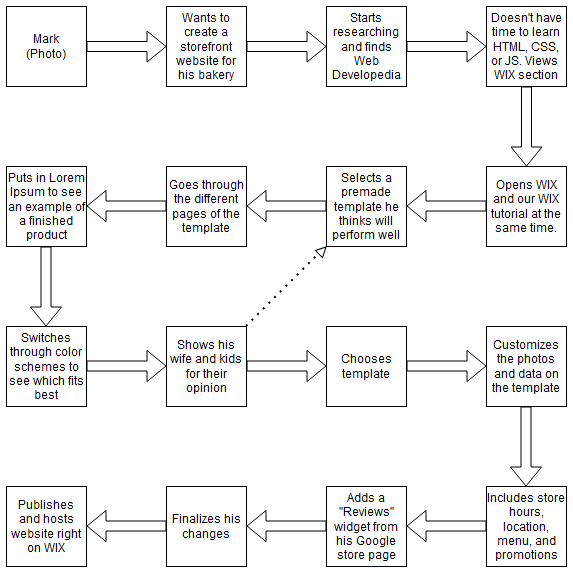

Scenario 2: Expanding a Business Presence Online


Mark's Journey
This flowchart illustrates Mark's journey in expanding his business presence online. It highlights how he chooses a platform, designs his website, and publishes it to reach a wider customer base. Mark leverages simple and effective tools to achieve his goals without needing extensive technical skills.